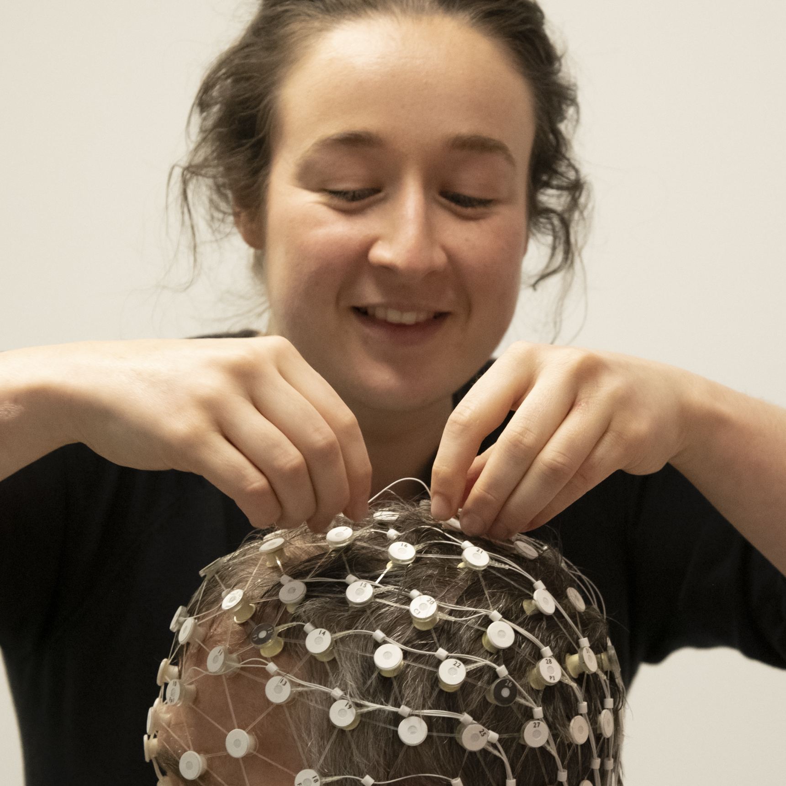

Dr Isabella Bower is an emerging leader in environmental cognitive neuroscience. Isabella’s work explores whether we can improve brain functioning and mental health through built environment design. During her PhD, she investigated how modifiable interior design characteristics of buildings (such as colour and scale) impact processes we use in daily life such as perception, attention, and emotion regulation. Isabella came into cognitive neuroscience with a humanities background, and experience working in state government and academia in research and research administration. She completed undergraduate and postgraduate training in Architecture, prior to completing her PhD in 2023 through the School of Psychology at Deakin University, Australia. During her candidature she published four peer-reviewed scientific articles, was awarded national and international competitive research fellowships and grants, and received several prizes for her public speaking, writing and visualisations. In 2023, she was awarded a five-year Postdoctoral Research Fellowship to continue her research at the University of South Australia.
Alongside her work, she is actively involved in volunteer committees to advocate and help support the next generation of emerging research leaders. Isabella joined the Australian Brain Alliance Brain Science EMCR Network in 2023, and is also currently part of the Australian Academy of Science EMCR Forum Executive, and the Australasian Cognitive Neuroscience Society ECR Committee. She has previously served as President for Students of Brain Research and Chief of Staff for Pint of Science Australia.